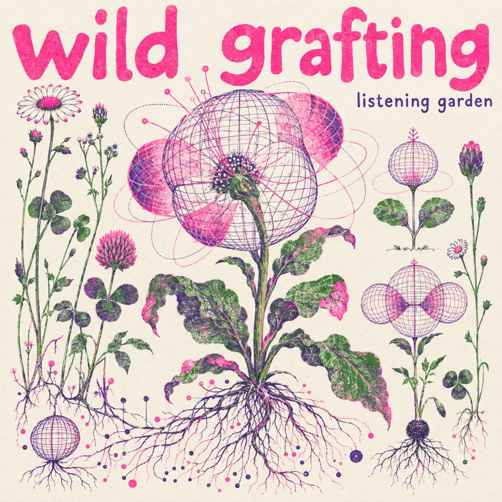

01 ALBUM COMPANION
Wild Grafting
An unlikely garden of sounds.
String phrases pick up fractured attacks. Percussion learns contour, hesitation and breath. Each leaves something behind in the other.
Listening notes, musical examples and a moving sound field, with Garden Voices, the companion album.